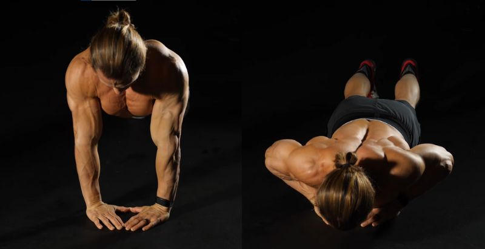
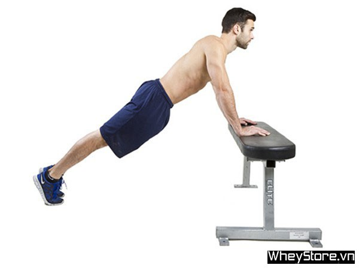

Hít Đất

1: Tư thế chuẩn bị
- Nằm sấp xuống sàn, duỗi thẳng người, hai tay đặt dưới vai, lòng bàn tay
chống xuống đất.
- Hai chân khép lại, mũi chân chạm đất.
- Cơ thể tạo thành một đường thẳng từ đầu đến gót chân, không để mông bị đẩy
lên
quá cao hoặc thấp xuống.
2: Thực hiện hít đất
- Hạ thấp cơ thể: Gập khuỷu tay và hạ ngực xuống gần mặt
đất, giữ lưng thẳng.
Đảm bảo khuỷu tay tạo góc khoảng 45 độ với cơ thể.
- Đẩy lên: dùng lực tay đẩy cơ thể trở lại tư thế ban đầu, giữ cho cơ thể luôn
thẳng.
3: lưu ý khi tập
- Thở đều: Hít vào khi hạ thấp người xuống và thở ra khi đẩy lên.
- Không cong lưng: Đảm bảo cơ thể luôn giữ thẳng từ đầu đến gót chân.
- Kiểm soát động tác: Thực hiên rộng rãi, tránh đẩy quá nhanh gây mất thăng
bằng.
4: Số lần lặp lại
- Người mới bắt đầu có thể thực hiện từ 8-12 lần trong 3 set. Khi quen dần, bạn
có
thể tăng số lần lặp lại hoặc tăng độ khó với các biến thể hít đất khác nhau.
Hít Đất Kim Cương

1: Tư thế chuẩn bị
- Nằm sấp xuống sàn, đặt hai tay dưới ngực, hai ngón trái và ngón trỏ chạm
vào nhau tạo thành hình viên kim cương (hoặc tam giác).
- Chân duỗi thẳng ra phía sau, mũi chân chạm sàn.
- Cơ thể từ đầu đến chân phải tạo thành một đường thẳng.
2: Hạ người xuống
- Hít vào khi bạn từ từ hạ thấp người xuống, giữ cho lưng thẳng và không để
hông xệ xuống hoặc nhô
cao.
- Hạ cơ thể xuống cho đến khi ngực chạm vào tay.
3: Đẩy người lên
- Thở ra khi bạn đẩy cơ thể lên bằng lực từ cơ tay sau và ngực, trở lại tư
thế bắt đầu.
- Khi đẩy người lên, giữ cơ thể luôn thẳng, không uốn cong lưng hoặc hông.
4: Lặp lại
- Lặp lại động tác này theo số bạn mong muốn. Nếu bạn mới bắt đầu, có thể tập
8-12 lần mỗi set và
2-3 lần mỗi buổi tập.
5: Lưu ý
- Nếu cảm thấy quá khó, bạn có thể bắt đầu với hít đất đầu gối (giữ đầu gối
chạm sàn).
- Đảm bảo cơ thể không bị chùng hoặc căng quá mức, giữ form tập luyện đúng là
rất quan trọng
để tránh chấn thương.
Chống Đẩy Dốc Lên (incline push up)

1: Chuẩn Bị
- Tìm một bề mặt chắc chắn và cao hơn mặt đất, ví dụ như ghế, bậc cầu thang
hoặc bàn.
- Đặt hai tay lên bề mặt này, khoảng cách rộng hơn vai một chút.
2: Tư Thế Bắt Đầu
- Duỗi thẳng cơ thể thành một đường thẳng từ đầu đến chân, giữ lưng thẳng và
siết cơ bụng.
- Mắt hướng về phía trước, không cúi đầu.
3: Hạ Thấp Người
- Hít vào, từ từ gập khuỷu tay và hạ thấp người xuống cho đến khi ngực chạm
gần bề mặt.
- Giữ cơ thể luôn thẳng, không mở quá rộng để tránh chấn thương vai.
4: Đẩy Người Lên
- Thở ra và dùng lực từ ngực, vai và tay để đẩy người lên về lại vị trí ban
đầu.
- Giữ khuỷu tay gần cơ thể, không mở quá rộng để tránh chấn thương vai.
5: Lặp Lại
- Lặp lại động tác từ 10-15 lần tùy thuộc vào khả năng.
6: Lưu Ý
- Chọn độ cao phù hợp: Độ cao càng lớn thì bài tập càng dễ, bạn có thể giảm
độ
cao dần để tăng độ khó.
- Tấp chung vào việc giữ thẳng và siết cơ bụng trong suốt quá trình tập.
- Khởi động kỹ các khớp tay, vai và cơ ngực trước khi tập để tránh chấn
thương.
Chống Đẩy Dốc Xuống (decline push up)
1: Chuẩn Bị
- Tìm một bề mặt cao để đặt chân lên, ví dụ như ghế, giường, hoặc bậc
thang.
- Đặt chân lên bề mặt này, hai tay đặt trên sàn rộng hơn vai một chút,
tương tự như tư thế
chống đẩy bình thường.
2: Tư Thế Bắt Đầu
- Giữ cơ thể cân bằng từ gót chân đến đầu, không để hông chùng xuống hoặc
nâng quá cao.
- Siết chặt cơ bụng để duy trì tư thế thăng bằng và bảo vệ lưng.
3: Hạ Thấp Người
- Hít vào, từ từ gập khuỷu tay và hạ ngực xuống gần chạm sàn.
- Giữa khuỷu tay gần cơ thể để tập chung lực vào ngực và cơ tay sau, không
mở quá rộng để tránh
áp lực lên vai.
4: Đẩy Người Lên
- Thở ra và đẩy cơ thể trở lại tư thế ban đầu, giữ cho lưng và hông thẳng.
5: Lặp Lại
- Lặp lại động tác từ 10-15 lần, tùy theo khả năng của bạn.
6: Lưu Ý
- Độ cao của chân: Độ cao chân càng lớn thì bài tập càng khó. Nếu bạn mới
bắt đầu, hãy sử dụng
một bề mặt
thấp và tăng dần độ cao khi đã quen.
- Tư thế lưng: Cần đảm bảo giữ lưng và hông thẳng trong suốt bài tập. Không
lên để lưng võng hoặc
cong quá
mức.
- Khởi động: Trước khi bắt đầu, hãy khởi động kỹ các khớp và cơ ngực, vai,
tay để tránh chấn
thương.
Quay lại đầu trang